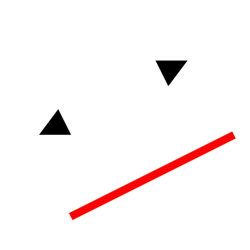
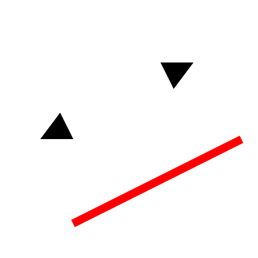
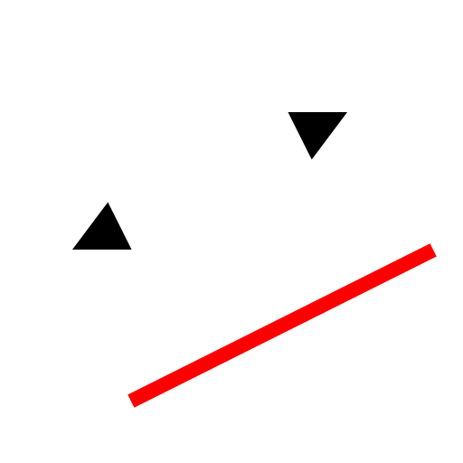
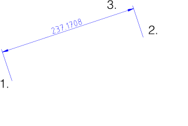

Menu: Dimensão - Alinhado
Atalho: D, A
Comandos: dimaligned | da

Descrição:
Cria cotações alinhadas. As cotações alinhadas medem geralmente a largura de
uma linha existente. A linha de cota é sempre paralela à linha delimitada pelas
linhas de extensão.

Procedimento: